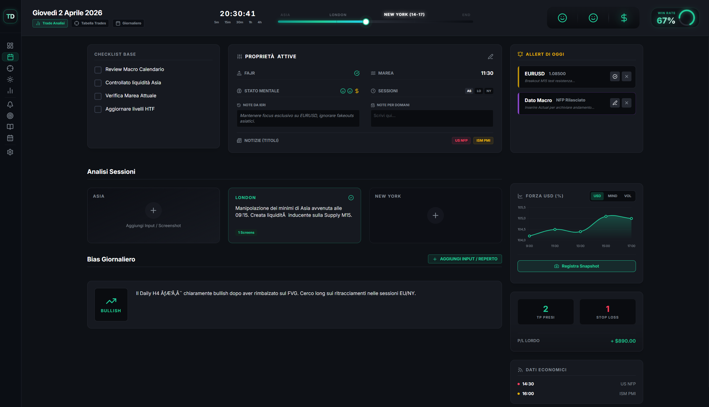
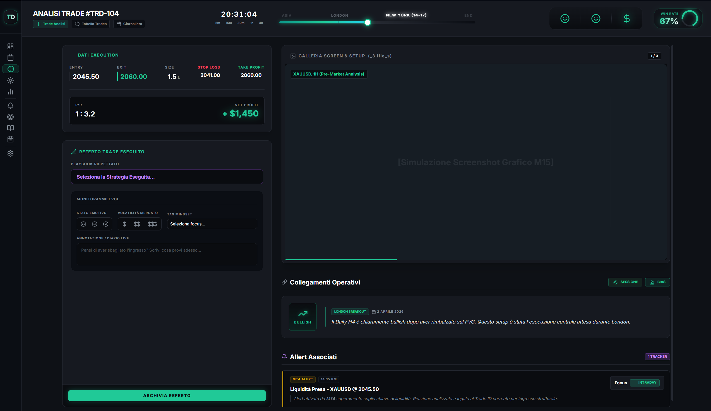
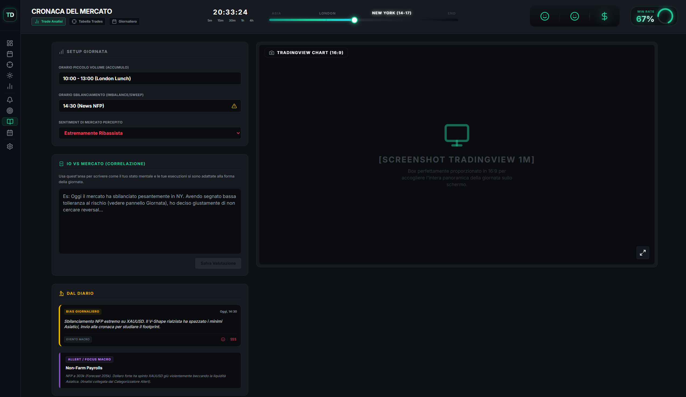
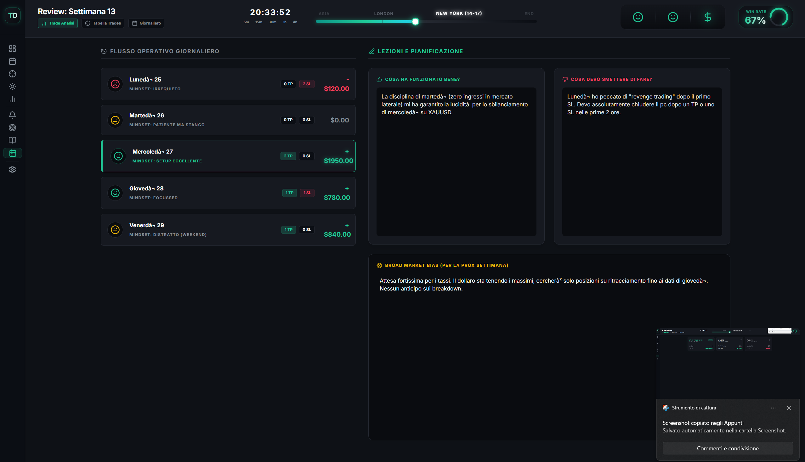
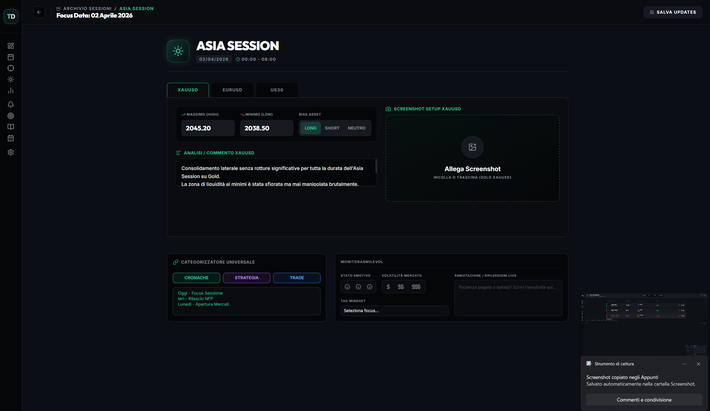
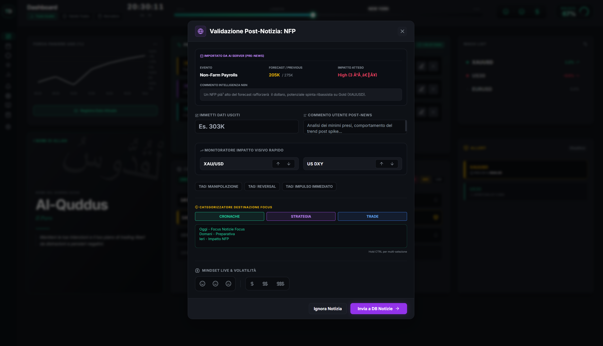
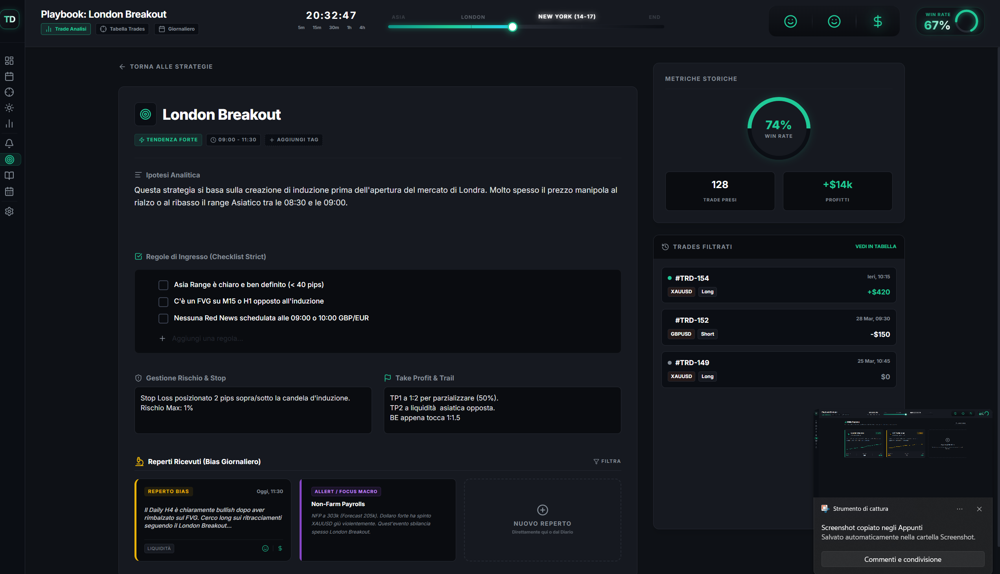

◆ Manuale Operativo · Volume I
Trade Deskil manuale
Guida illustrata alle quattordici pagine del sistema. Per ogni schermata: cosa contiene, dove guardare, cosa fare, e quando farlo. Pensata per essere riletta nei momenti di confusione operativa.
Timezone
Africa / Casablanca
Cadenza
Lun – Ven · scalping
i.Screenshot live
ii.Otto elementi chiave
01
Timeline sessioni
Asia chiusa · London chiusa · New York attiva (14–17). Cursore live, clock al secondo.
02
Win Rate ring
67% calcolato live su tutti i trade. Si aggiorna ad ogni chiusura.
03
Forza Paniere USD
Indice DXY-like aggiornato ogni 5 min dall'EA USDStrength. Contesto macro per il bias.
04
Checklist disciplina
Items configurati in Impostazioni. Nessuna sessione si apre se è incompleta.
05
Processi attivi
Tutto ciò che richiede azione adesso: trade da taggare, NFP rilasciato, sessione aperta. Il pulse della giornata.
06
Calendario notizie
NFP 14:30 HIGH · Unemployment 14:30 HIGH. Campanella gialla = alert Telegram impostato.
07
Watchlist live
XAUUSD +1% · US30 · GER30 · NAS100 · BTCUSD. Tick aggiornato ogni minuto.
08
Alert in attesa
XAUUSD a 2045.50 · US30 apertura NY. Generati da PriceAlert EA.
iii.Protocollo mattutino
Cosa guardi
- Header KPI — win rate, sessione attiva, mindset
- Timeline — dove sei nella giornata
- Processi attivi — cosa richiede azione subito
- Calendario — eventi HIGH da segnare
- Forza USD — contesto macro per il bias
- Watchlist — chi si muove fuori range
Cosa non fai
- Non compili nulla — i dati arrivano dagli EA
- Non apri trade da qui — è una sola lettura
- Non spendi più di 30 secondi a guardarla
- Non aggiorni il browser — Realtime fa il suo
- Non saltare la checklist anche se tutto è verde
La Dashboard non si compila — si legge. È il tuo cruscotto: in trenta secondi capisci dove sei, cosa è successo, cosa ti aspetta.
— Manuale Trade Desk · §1.1
i.Screenshot live · 9 Aprile 2026
ii.Sei elementi chiave
01
Titolo & quick-jump
Database Giornaliero. Bottoni rapidi: Trade Analisi · Tabella Trades · Giornaliero — la triade operativa.
02
Header KPI live
Win rate ring 67% sempre visibile in alto a destra. Persiste tra pagine — è il battito del sistema.
03
Filtri & vista
Filtra · Ordina · contatore "4 Giornate archiviate". Toggle a destra: griglia o tabella compatta.
04
Card data
Colonna sinistra con mese + giorno. Titolo della giornata + badge asset (XAUUSD · US30). Sotto: mindset registrato.
05
P/L netto colorato
Verde se profit, rosso se perdita. Aggregazione dei trade del giorno — non si modifica a mano.
06
Crea nuova entry
Per giornate archiviate manualmente. In genere la riga la crea il sistema all'apertura della prima sessione.
iii.Quando ci torni
Cosa fai qui
- Sfogli le ultime 5–10 giornate per trovare pattern
- Click su una card → editi mindset, note, checklist
- Confronti P/L vs mood: "ho perso quando ero stanco?"
- Filtri per asset per vedere come stai sull'oro questa settimana
Cosa non tocchi
- Non modifichi P/L manualmente — viene dai trade
- Non cancelli giornate vecchie — sono storia
- Non cambi badge asset se hai già trade collegati
- Non duplichi giornate — il vincolo UNIQUE per data te lo blocca
Sub-pagina
dettaglio_giornata · edit completo

Click su una card della Giornaliero → arrivi qui. Quattro blocchi: Checklist Base (gli items configurabili in Impostazioni), Proprietà Attive (taglia · stato mentale · marea · sessioni operate · note di sessione), Analisi Sessioni (Asia/London/NY con screenshot di setup), Bias Giornaliero (lettura macro del giorno).
A destra trovi Allert di oggi e Forza USD sempre presenti. In basso: TP fired vs Stop Loss della giornata, P/L lordo, dati economici programmati. È la pagina che editi più frequentemente dopo la dashboard.
Il giornaliero è la memoria muscolare del processo: lo riempi senza pensare quando va bene, lo rileggi quando va male.
— Manuale Trade Desk · §2.1
i.Screenshot live
ii.Sei elementi chiave
01
Registro Trades
Header pagina. Sotto, contatore "12 Trades archiviati in lista" — conta totale storica, non solo oggi.
02
ID trade
#TRD-104 · numerazione progressiva univoca, generata da sequence Postgres. Mai riassegnata.
03
Direzione & size
Badge LONG (BUY)/SHORT (SELL) · breakeven. Lots accanto. Colore della badge = direzione.
04
Sorgente & stato
MT4 · COMPILATO · BYBIT · DA ACCETTARE. I trade da MT4/Bybit arrivano grezzi, vanno validati.
05
Open / Close · R:R
Prezzo apertura/chiusura · ratio R:R calcolato. Colonna sintetica per scorrere veloce.
06
P/L colorato & arrow
+$1450 verde · −$750 rosso · 0 grigio. Click sulla freccia → dettaglio_trade.
iii.Workflow tipico
Cosa fai qui
- Apri dopo una sessione per vedere i nuovi trade da MT4
- I "DA ACCETTARE" li compili: tag strategia, mindset, screenshot
- Click su riga → dettaglio per editare TP/SL/note
- Filtri per asset/sorgente quando ti serve un subset
Cosa non fai
- Non cancelli trade — usa "archivia" se proprio serve
- Non modifichi entry/exit prezzo — quelli arrivano dall'EA
- Non taggi una strategia "a memoria" — usa le esistenti
- Non lasci trade in DA ACCETTARE per più di 24h
Sub-pagina
dettaglio_trade · analisi singolo trade

Analisi Trade #TRD-104: dati execution (entry · exit · size · stop loss · take profit), R:R e Net Profit calcolati, galleria screenshot & setup. Sotto: Referto Trade Eseguito — selezioni la strategia eseguita, registri mindset/livello, voto disciplina, descrizione del setup.
A destra: Collegamenti Operativi (bias del giorno, allert correlati, notizia macro che lo ha mosso). Bottone giallo Archivia Referto in basso = chiude il caso e contribuisce al win rate aggregato.
Un trade non chiuso correttamente è un trade che continuerà a costarti: non in soldi, in attenzione.
— Manuale Trade Desk · §3.1
i.Screenshot live
ii.Sei elementi chiave
01
Cronache Mercato
Header pagina. Sotto: Archivio Daily Chart e Analisi Trend — il claim del modulo.
02
Tab asset
Tutti · XAUUSD · US30 · selezionano la riga visibile. "Tutti" mostra la matrice intera.
03
Card giornaliera
16:9 con thumbnail screenshot grafico. Sotto: titolo evento ("Falsa rottura Asia"), asset badge, percentuale del giorno colorata.
04
Commento sintetico
Tre righe max. Cosa è successo, in tono operativo: "Giornata indecisa con sweep e ritorno".
05
Nuova Cronaca
Crei manualmente una cronaca per un evento non catturato dall'EA. Da usare con parsimonia.
06
Slot vuoto
Cella senza cronaca → opportunità persa o giornata flat. Click → crea nuova entry per quella casella.
iii.Pipeline cronache
Come arrivano
- EA CodeTV butta dati grezzi in
cronache_auto
- Trigger Postgres unisce con
cronache (vista utente)
- Tu rileggi, aggiungi commento, decidi se taggare strategia
- Steve può analizzare la coorte settimanale per pattern
Cosa non fai
- Non scrivi mai direttamente in
cronache_auto
- Non cancelli cronache vecchie — sono il dataset di Steve
- Non taggi 5 strategie sulla stessa cronaca — al massimo 2
- Non riempi le caselle vuote a forza — il flat è informazione
Sub-pagina
dettaglio_cronaca · del mercato

Setup giornata: orari piccolo volume (London Lunch) · orari sbilanciamenti (News NFP) · sentiment di mercato. Sotto, I/O vs Mercato — correlazioni tra i tuoi trade e il movimento del giorno. A destra: TradingView chart embed (16:9) con il setup screenshottato.
Dal Diario in basso: gli eventi clou aggregati — sbilanciamenti NFP, allert price/macro, sessioni operate. La cronaca è il punto in cui market e processo si incontrano.
La cronaca non è il movimento, è la tua lettura del movimento. Se non la scrivi, non è successa.
— Manuale Trade Desk · §4.1
i.Screenshot live
ii.Cinque elementi chiave
01
Numero settimana
Week 14 (Corrente) in mint = settimana in corso. Calcolato come ISO week dell'anno.
02
Badge stato
IN CORSO · ✓ chiusa · ⊘ vuota. Solo una card può essere "IN CORSO".
03
Range date
"1 APR – 7 APR 2026" — sempre lunedì → domenica, anche se opera solo lun-ven.
04
Win Rate Totale
65% aggregato sui trade chiusi della settimana. "--" se in corso o senza trade.
05
Net Profit
+$3,450 verde · -$850 rosso · "Elaborazione…" se ancora in corso.
iii.Quando la guardi
Cosa cerchi
- Trend: 4 settimane positive di fila o alternanza?
- Volatilità: net profit a spike o costante?
- Mood-PnL: settimane stress = settimane red?
- Asset rotation: cambia il PnL leader settimana per settimana?
Cosa non fai
- Non chiudi mai la corrente in anticipo — aspetta venerdì 18:00
- Non cancelli settimane vuote — sono "settimane di pausa"
- Non confronti settimane diverse senza pesare i giorni operati
Sub-pagina
dettaglio_settimana · debrief

Flusso operativo giornaliero: 5 righe (lun–ven), una per giorno della settimana. Per ogni giorno: mood, badge sintetico ("INDECISO" · "PAZIENTE NON STANCO" · "SETUP ECCELLENTE" · "FOCUSED" · "DISTRATTO"), P/L netto.
A destra: Cosa ha funzionato bene (estratto dei pattern positivi della settimana) · Cosa devi smettere di fare (lezioni Peter). In basso: Broad Market Bias per la prossima settimana — riepilogo macro per orientarti il lunedì.
La settimana è la più piccola unità in cui un trader retail vede pattern reali. Sotto è rumore, sopra è vanità.
— Manuale Trade Desk · §5.1
i.Screenshot live
ii.Sei elementi chiave
01
Archivio Sessioni
Header. Claim: "cronologia logica e session analysis". Counter "Totale Sessioni 24" in alto a destra.
02
Tab filtro
Tutte · Asia · London · New York. Filtro veloce per concentrarti su una sola sessione.
03
Riga sessione
Asia/London/NY · data · asset principale. Icona sole = pre-market quiet, vento = volatilità, scudo = chiusura difensiva.
04
Range pips
65 pips · 120 · 450. Indica volatilità della sessione misurata da H–L escluso outlier news.
05
Bias result
Badge LONG · SHORT · NEUTRAL. È il bias che il sistema (o tu) hai dichiarato a inizio sessione, validato dall'esito.
06
Mood emoji
😀 sereno · 😐 neutro · 😡 frustrato. Sintesi del MonitoraSmile della sessione.
iii.Logica di seed
Come nascono
- Trigger Postgres su
giornate: alla creazione di una giornata, crea le 3 sessioni
- EA MT4 popola
coin_data con high/low della sessione
- Tu rileggi e aggiungi bias result + commento
- L'AI Rodrigo NON può fare insert su
sessioni — solo update
Cosa non fai
- Non crei sessioni a mano — il trigger lo fa
- Non cambi i nomi: sempre
asia/london/newyork (mai "londra")
- Non passi numeri a
coin_data — sono sempre stringhe
Sub-pagina
dettaglio_sessione · focus su una

Asia Session · 02 Aprile 2026. Tab per coin (XAUUSD · EURUSD · US30) con per ognuna: massimo/minimo, bias asset (LONG · SHORT · NEUTRO), commento testuale, screenshot setup.
In basso: Categorizzazione Universale (Cronache · Strategia · Trade) e MonitoraSmile (stato emotivo + volatilità percepita). La sessione è l'unità minima dove disciplina e mercato si toccano.
La sessione è il blocco operativo: tre ore di attenzione concentrata, tre lezioni nascoste dentro.
— Manuale Trade Desk · §6.1
i.Layout · wireframe
1
Header · Reperti
Titolo pagina, contatore reperti totali, filtro asset/direzione/esito.
2
Card reperto
Asset · data · direzione (LONG/SHORT) · screenshot grafico H4.
3
Confluenze
Lista bullet: liquidità presa, FVG, struttura HTF, allineamento DXY.
4
Esito badge
Verde "corretto" · giallo "parziale" · rosso "sbagliato". Calcolato post-evento.
5
Commento
Testo libero: "perché pensavo questo, cosa è successo davvero, lezione".
6
Trade collegati
FK ai trade aperti basati su questo bias. Click → tabella trade filtrata.
ii.Sei elementi chiave
01
Header & filtri
Selezioni asset (XAU · EUR · US30) · direzione · esito. Vista sempre desc per data.
02
Card reperto
Asset · data · screenshot H4 grafico. Click → dettaglio_bias.
03
Confluenze
Lista delle ragioni che hanno generato il bias. Ti aiuta a capire quanti elementi servono in media perché tu abbia ragione.
04
Esito automatico
Il sistema confronta direzione del bias vs movimento reale a +24h e classifica.
05
Commento post-mortem
La parte più importante. Va scritta entro 24h dall'esito, prima che il ricordo si sbiadisca.
06
Trade collegati
Quanti trade hai aperto basandoti su questo bias? La domanda chiave per la disciplina.
iii.Cosa cercare nei Reperti
Domande buone
- Quante confluenze ho in media nei bias corretti vs sbagliati?
- Sono più affidabile in LONG o in SHORT?
- Quale asset prevedo meglio? (XAU? EUR?)
- Dopo un bias sbagliato, quanti giorni tornano ad essere corretti?
Domande cattive
- "Perché XAU sale?" — non è il punto, il punto è la tua lettura
- "Quante volte ho avuto ragione?" — senza n statistico è vanità
- "Il prossimo bias sarà giusto?" — non c'è regressione alla media qui
I reperti non servono per prevedere. Servono per riconoscere quando ti sbagli sempre allo stesso modo.
— Manuale Trade Desk · §7.1
08
cuore · sistema notizie
i.Screenshot live
ii.Sei elementi chiave
01
Notizie macro
Sezione Economic Calendar. NFP · Jobless Claims · BOE Gov Bailey Speaks. Iniettate il lunedì 05:30 da news-weekly-fetch.
02
Impact badge
HIGH IMPACT rosso · MED giallo · LOW grigio. Filtro: solo USD ed EUR (scelta esplicita per ridurre rumore).
03
Actual / Forecast
"Actual: 303K (F: 205K)" + freccia direzione: XAU↓ · DXY↑. Compilato dopo l'uscita; trigger Postgres invoca Rodrigo per il commento.
04
Allert prezzo
EURUSD Target · 1.0850. Generati dall'EA PriceAlert su MT4. Validi finché non triggerati o ignorati manual.
05
MonitoraSmile
Registro stato emotivo. Focussed/Calmo oggi 08:30 · FOMO/Fretta ieri 15:45. Storia raw del processo.
06
Quote post-mood
Frasi tra virgolette: "Ottima dormita, pronto per NY" · "Ingresso anticipato per colpa di X(Twitter)". Sono i memo che il futuro-te leggerà.
iii.Pipeline notizie
Cosa fai qui
- Lunedì alle 06:00 vedi la settimana già compilata con analisi pre
- 5 min prima di un evento HIGH ricevi reminder Telegram da Rodrigo
- Dopo l'uscita apri il modale, scrivi l'actual, salvi
- Il trigger DB invoca Rodrigo che scrive commento_rodrigo
Cosa non fai
- Non rimuovi il filtro USD/EUR — è per ridurre rumore
- Non modifichi
ff_id — è la chiave di dedup
- Non skippi il MonitoraSmile prima di una sessione
- Non scrivi
commento_rodrigo a mano — lo scrive lui
Modale
Validazione Post-Notizia · NFP

Si apre cliccando sull'evento. Header rosso = HIGH IMPACT. Forecast/Previous, intelligenza alta, commento esistente di Rodrigo (analisi pre-evento). Tu compili: Dato Uscito (es. 303K), Commento Utente Post-News.
MonitoraSmile rapido: per ogni asset (XAUUSD · USDX) clicchi tag operativi: manipolazione · reversal · impulso immediato. Categorizzazione destinazione focus: Cronache · Strategia · Trade. Riepilogo eventi correlati. Bottone giallo "Invia a DB Notizie" → UPDATE + trigger Rodrigo.
La notizia non è il dato — è la tua reazione al dato. Se non la registri, non è successa.
— Manuale Trade Desk · §8.1
i.Screenshot live
ii.Sette elementi chiave
01
Net P/L Globale
+$14,250. Aggregato su tutto il periodo selezionato. Dollari, non pips.
02
Win Rate %
68.5% con delta vs periodo precedente (+2.6%). Verde se in miglioramento.
03
Risk / Reward medio
1 : 2.4. Calcolato come media dei R:R per trade chiuso. Un valore < 1.5 alza un alert.
04
Max Drawdown
-4.2%. Picco di perdita dal massimo equity. Il numero che decide se sopravvivi.
05
Equity Curve
Balance ↑ nel tempo. La curva ideale è ripida e liscia. Trades in Profit in alto a destra.
06
Distribuzione P/L Asset
Pie chart: XAU · US30 · EUR. La fetta più grande è l'asset che porta a casa il bacon — o quello che ti distrugge.
07
P/L per sessione
Bar chart: London Open · Lunch · NY Open · NY PM · Asia. Vedi quando sei più produttivo.
iii.Domande dell'analisi
Domande buone
- L'equity curve ha avuto 3 mesi flat? Cosa è cambiato dopo?
- Se tolgo XAU dal pie, cosa rimane? Sono scalper d'oro o trader generico?
- NY PM è verde o rosso? La sessione di chiusura è quella dove rovino?
- Win Rate e R:R medio si tengono insieme o uno dei due è "in saldo"?
Domande cattive
- "Quanto ho fatto questo mese?" — il mese è una finestra arbitraria
- "Posso scalare a 5 lots?" — la risposta non è in questa pagina
- "Sono migliorato?" — confronta sempre con l'equity, non col PnL grezzo
L'analisi non ti dice cosa fare domani. Ti dice solo se quello che hai fatto fin qui ha senso.
— Manuale Trade Desk · §9.1
i.Screenshot live
ii.Cinque elementi chiave
01
Playbook Strategie
Header. Sotto: "il mio playbook · archivio delle definizioni operative e analisi flow per singola iterazione strategica".
02
Card strategia
London Breakout · setup momentum. ICT Turtle Soup · reversal stop hunt. Status badge "Attiva" mint.
03
Mini-grafico equity
Sparkline degli ultimi N trade della strategia. La curva ti dice se è in forma o se è da rivedere.
04
KPI sintetici
Win Rate · Trades · P/L. Aggregati a vita della strategia. Se WR < 40% → status diventa "Pausa" automaticamente.
05
Aggiungi Modello
Card vuota che invita a creare nuovo playbook. "Usa le impostazioni per inserire una nuova voce nel dizionario strategie."
iii.Vita di una strategia
Quando la usi
- Idea → bozza con regole d'ingresso, gestione rischio
- Backtest manuale: 20 trade simulati o storici
- Status "Attiva" → tagghi i trade reali con la strategia
- Dopo 30 trade reali rivedi WR/R:R/expectancy
Quando la archivi
- WR sotto 40% per 30+ trade → archivia o riformula
- Setup non più coerente con tuo orario operativo
- Il mercato è cambiato (regime shift) e i livelli non funzionano
- Hai trovato una strategia migliore che la sostituisce
Sub-pagina
dettaglio_strategia · London Breakout

Ipotesi Analitica: la strategia si basa sulla creazione di induzione prima dell'apertura del mercato di Londra. Regole di ingresso (checklist): Asia Range chiuso e ben definito (≤ 40 pips) · C'è un FVG su M15 o H1 opposto all'induzione · Nessuna Red News schedulata alle 09:00–10:00 GBP/EUR.
Gestione Rischio & Stop: Stop Loss posizionato 3 pips sopra/sotto la candela di induzione · Rischio Max 1%. Take Profit: TP1 a 1:2 per parzialitare 50% · TP2 a liquidità asiatica opposta · BE appena tocco 1:1.5. A destra: Metriche storiche (WR 74%, 128 trades, +$14k) e Trades filtrati. In basso: Reperti ricevuti collegati e Allert Premarket per conferma del giorno.
Una strategia non è un'opinione: è una regola scritta che hai accettato di seguire anche quando non ti va.
— Manuale Trade Desk · §10.1
i.Layout · wireframe
1
Tab asset
XAUUSD · US30 · GER30 · NAS100 · EURUSD · BTCUSD. Cambiano il symbol del widget TV.
2
TradingView embed
Iframe widget interattivo. Timeframe selector built-in: 1m · 5m · 15m · 1h · 4h · 1d.
3
Destinazione paste
Radio button: Trade · Bias · Cronaca · Sessione. Determina la tabella dove va l'URL.
4
ID record
Input/select per scegliere a quale record allegare lo screenshot (es. TRD-104).
5
Drop area
"Incolla con Ctrl+V o trascina qui". Anteprima thumb dell'immagine in attesa di salvataggio.
ii.Cinque elementi chiave
01
Tab asset
Lista degli asset preferiti: XAUUSD · US30 · GER30 · NAS100 · BTCUSD · EURUSD. Click → cambia simbolo TradingView.
02
Widget TradingView
Embed iframe interattivo. Tutto il chart nativo TV: drawing tools, indicatori, replay (premium).
03
Destinazione
Radio: Trade · Bias · Cronaca · Sessione. Decide in quale tabella scrivere l'URL.
04
Selettore record
Dopo aver scelto la destinazione, selezioni a quale ID associare (es. TRD-104, BIAS-23).
05
Ctrl+V drop
Incolla screenshot dal grafico → upload su Supabase Storage → URL scritto nel record. Workflow di 3 secondi.
iii.Quando lo usi
Casi tipici
- Hai chiuso un trade, vuoi allegare il setup screenshot
- Stai compilando un bias, ti serve il chart H4 dell'asset
- Cronaca giornaliera: thumbnail per la card della griglia
- Sessione: high/low di sessione catturati visivamente
Quando non lo usi
- Per analisi profonda — usa direttamente TradingView Desktop con MCP
- Per backtesting — usa Replay TV o strategie Pine
- Per allegare PDF o file generici — questo è solo per chart
Lo screenshot è la memoria visiva del trade. Senza, il trade vive solo nei numeri — e i numeri non insegnano niente.
— Manuale Trade Desk · §11.1
12
post-sessione · debrief
i.Layout · wireframe
1
Header coach
Avatar Peter · titolo "Coach Disciplina" · status "in linea" · ultimo debrief timestamp.
2
Quick prompts
"Debrief sessione di oggi" · "Voto disciplina 30gg" · "Pattern errori questa settimana".
3
Conversazione
Bubble chat. User a destra mint, Peter a sinistra paper. Markdown rendering, sezioni con header.
4
Composer
Input testuale + bottone invia. Cmd/Ctrl+Enter per inviare rapido.
5
Footer dati
Sample size visibile sempre: "n=23 trade · n=12 giornate · finestra 30gg".
ii.Cinque elementi chiave
01
Avatar & identità
Peter è un analista clinico, non un Mr. Miyagi. Tono distaccato, terzo.
02
Quick prompts
Tre azioni veloci: debrief · voto · pattern. Servono per ridurre attrito iniziale.
03
Output strutturato
Peter risponde con sezioni: Identificazione errore · Primo momento di deviazione · Voto disciplina · Una regola per domani.
04
Composer
Input semplice. Niente upload, niente attachment. Solo conversazione.
05
Sample size sempre
Regola critica: Peter dichiara sempre il livello di confidenza statistica ("n=4, debole" / "n=23, robusto"). Mai pattern senza n.
iii.Quando parli con Peter
Domande buone
- "Debrief della sessione di London di oggi"
- "Quante volte ho violato la checklist questa settimana?"
- "Pattern degli stop loss negli ultimi 30 giorni"
- "Voto disciplina del mese scorso, in numeri"
Domande cattive
- "Come sto andando?" — troppo vago, Peter non motiva
- "Mi sento giù, dimmi che andrà bene" — non è un coach
- "Predici se domani sarà profittevole" — non è il suo lavoro
- "Suggeriscimi un trade adesso" — è Rodrigo, non Peter
Peter non ti dice se hai vinto. Ti dice se hai seguito il processo. Vincere è una conseguenza che tu cerchi a parte.
— Manuale Trade Desk · §12.1
i.Layout · wireframe
1
Header strategist
Avatar Steve · "Calcolatore Strategico" · ultimo run timestamp.
2
Templates di analisi
"Backtest playbook X · 90gg" · "Distribuzione R:R per asset" · "Expectancy per sessione".
3
Conversazione + tabelle
Output markdown con tabelle strutturate. Sezioni chiare, nessun emoji, sample size in header.
4
Composer + filtri
Input testuale + filtri rapidi: periodo · asset · sessione · strategia.
5
Export
Bottone "Salva risposta in Note". Le risposte di Steve sono draft di documenti.
ii.Cinque elementi chiave
01
Identità
Steve è il quant. Numerico, conciso, zero fronzoli. Risposte in tabelle.
02
Templates
Analisi pre-impostate per ridurre il prompt-engineering quotidiano.
03
Output tabellare
Markdown con tabelle. Header sempre con n=N, periodo, condizioni del campione.
04
Filtri rapidi
Periodo · asset · sessione · strategia. Per non dover specificare tutto in prompt.
05
Export
Salvi risposte come note interne. Steve produce draft, non chat.
iii.Quando lo apri
Casi giusti
- Backtest formale di una strategia su 90+ giorni
- Distribuzione R:R per asset, con percentili
- Expectancy (E = WR×R − (1−WR)) per sessione
- Validazione di un'ipotesi: "London Lunch è flat?"
Casi sbagliati
- Domande operative del giorno (è Rodrigo)
- Debrief post-sessione (è Peter)
- Conferme emotive ("ho fatto bene?")
- Forecast di mercato ("dove va XAU?")
Steve non parla — conta. Quando ti serve un sì/no fondato, non un'opinione, è lui.
— Manuale Trade Desk · §13.1
14
configurazione · radice
i.Screenshot live
ii.Cinque elementi chiave
01
Checklist Base
Items del Giornaliero. Drag & drop per riordinare. "Review Macro Calendario" · "Controllato liquidità Asia" · "Verifica Marea Attuale" · "Aggiornato livelli HTF".
02
Orari Sessioni
Asia 00:00–09:00 · London 09:00–11:30 · NewYork 14:00–17:00. Casablanca time. Modificabili ma cambiano la timeline ovunque.
03
Badge Asset & Proprietà
Asset preferiti: XAUUSD · US30 · GER30. Stati mentali opzionali: Eccellente focus · Stanchezza · Forte / Urgenza.
04
Setup Modelli Strategici
Crea/edita strategie da qui. Bottone Crea Strategia popola la tabella strategie con un nuovo skeleton.
05
Cards strategia esistenti
London Breakout · ICT Turtle Soup. Click → edit regole d'ingresso (JSONB checklist) e gestione rischio.
iii.Cosa configuri qui
Cose sicure da toccare
- Aggiungere/togliere item dalla checklist disciplina
- Cambiare gli stati mentali disponibili nel mood picker
- Aggiungere asset alla watchlist preferiti
- Creare nuovo modello strategia
- Modificare frasi disciplina (motto del giorno)
Cose delicate
- Cambiare orari sessioni → ricalcola tutta la timeline
- Rinominare badge asset → trade vecchi diventano "Other"
- Eliminare strategie con trade collegati → FK error
- Cambiare timezone → tutto il sito si scombina (resta su Casablanca)
Le impostazioni sono il motore logico: lo configuri una volta, lo dimentichi. Se ci torni spesso, c'è qualcosa che non va nel processo.
— Manuale Trade Desk · §14.1